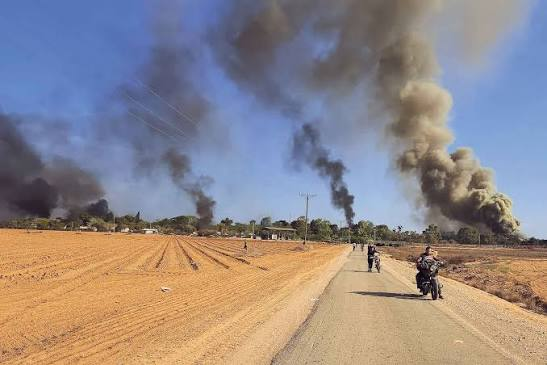

October 7, 2023 was a major and devastating day in the history of Israel and the Israeli-Palestinian conflict. On that morning, Hamas-led armed groups launched a large-scale attack from the Gaza Strip into southern Israel.
The attack began in the early morning with a large number of rockets launched toward Israel. Armed militants then crossed the border at multiple locations by land and also entered Israel using other methods. Communities and military positions near the Gaza border were attacked, and many civilians and soldiers were killed or taken hostage.
The events of October 7 led to the outbreak of a major war between Israel and Hamas in Gaza. The day had a profound impact on people in Israel, Gaza, and the wider region, and its consequences continue to be discussed and studied today.
